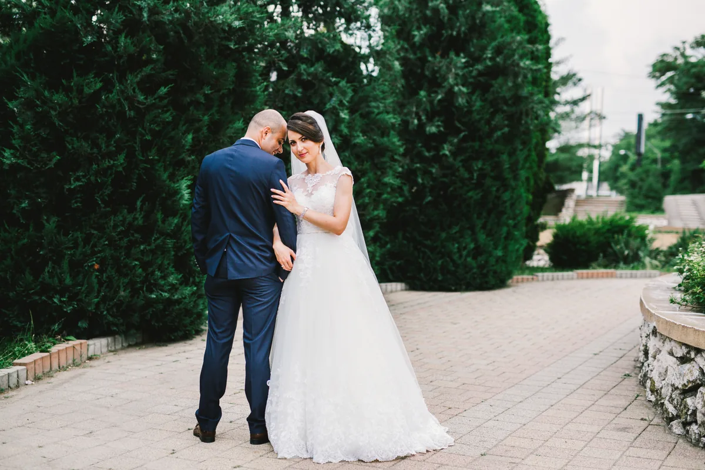

08 / The first look
First look,
or wait for the aisle?
What seeing each other before the ceremony does to your portraits, your morning, and your cocktail hour.
By Alex Claudio Photography
A first look means seeing each other before the ceremony, somewhere private, usually an hour or two ahead.
It moves most of the portraits to the start of the day. Both choices work. You are choosing between an earlier start with cocktail hour free, and the walk down the aisle as the first time you see each other.
Part 1 of 2
What it changes
The portraits move before the ceremony
With a first look, the portraits of the two of you, the wedding party, and both families can all be finished before the ceremony. Afterwards you walk straight into cocktail hour.
Without one, every photograph that needs both of you waits until the ceremony is over. In my example timeline those photographs take 85 minutes: 35 for the first look and portraits of the two of you, 25 for the wedding party, and 25 for family. Cocktail hour in the same timeline is 50 minutes.
If you wait, something has to give. You can take fewer groups, ask for a longer cocktail hour, or spend less of it with your guests.
The day starts earlier
In that timeline the first look is at 2 p.m. and the ceremony at 4, so you are both dressed two hours before it begins. Hair and makeup have to finish earlier, and everyone in the group photographs needs an earlier arrival time.
Check the earlier finish with the people doing your hair and makeup before you commit. Then choose a spot away from the entrance, so that guests who arrive early do not walk in on it.
In winter you may need one
From early November to late January the sun sets in Seattle before 5 p.m. In December a half-hour ceremony at 3 p.m. ends with less than an hour of daylight left, and one at 4 p.m. ends after sunset.
If you want portraits in daylight then, see each other first. Sunset times for a Seattle wedding has the time for every month.
In summer the choice is open. From mid-May to early August the sun sets after 8:30 p.m., so there is daylight after any afternoon ceremony. Waiting costs you part of cocktail hour and no light.
Part 2 of 2
How to choose
Reasons to wait
Some couples want the first sight of each other to be at the aisle, with everyone they love watching. Some families and traditions expect it. Others would rather not be dressed and in front of a camera by early afternoon.
If you wait, take what you can beforehand. Each of you can have portraits alone, with your own family, and with your own side of the wedding party. After the ceremony, only the photographs that need both of you remain.
Then keep the family photo list short, or ask your venue for a longer cocktail hour.
Reasons to see each other first
You get to talk. At the aisle you cannot say anything to each other until the ceremony is over. At a first look you have a few minutes alone before the guests arrive.
The portraits happen while your hair and makeup are fresh, and before anyone is waiting for you.
You also keep cocktail hour. For many guests it is the only real conversation with you until the end of the night.
How I photograph it
Choose a quiet spot with good light, away from arriving guests. One of you waits there, facing away, and the other walks up.
I stay well back with a long lens, so the first minutes are yours. When you are ready, we go straight into portraits.
If you want to exchange letters or vows there, tell me, and I will leave time for it.
Two options in between
A first touch keeps the aisle and still gives you a moment together. You stand on either side of a door or a corner and hold hands without seeing each other. Some couples read letters to each other this way.
You can also have a first look with a parent, who sees you dressed for the first time.
Neither one moves the portraits. Plan the time after the ceremony as you would without a first look.
Decide before you set the ceremony time
The answer changes everything around it, so decide before you set the ceremony time. Then tell your planner and the people doing your hair and makeup.
Send me your date and ceremony time, and I will show you what each choice does to your day.